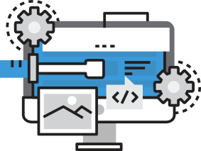
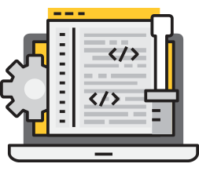

Мысли Криса Койера
Одна из мыслей, которая поселилась в моей голове: должен ли frontend- разработчик быть в курсе всего?
В общем смысле, frontend-разработчик может использоваться и на других рабочих местах. Вся команда разработчиков заканчивает разговор на frontend-разработчике. В этом смысл моей идеи.
Frontend-разработчики создают те вещи, с которыми будут взаимодействовать люди. Все этапы разработки проходят вместе с frontend-разработчиком. Возможно, именно поэтому это такая забавная работа!
Поскольку frontend-разработчик занимает центральное место в цепочке разработки, и при этом мы имеем дело с большим количеством разных специалистов, мы должны понимать их работу и иногда подсказывать, что и как сделать лучше.
Если frontend-разработчик не является сам по себе дизайнером, он должен знать, насколько важен дизайн. Он должен иметь хороший вкус. Он должен знать об инструментах, участвующих непосредственно в разработке.
Frontend-разработчик должен разбираться в работе серверной части (backend)
Даже если вы и не backend-разработчик, то вы явно осознаёте всю важность серверной части. Вы понимаете, с чем взаимодействует backend, что передается на сервер, а что нет. Вы знаете об обязанностях backend-разработчика. Вы понимаете, какой язык используется на сервере, и при этом должны уметь объяснить, что должен дать вам backend и что нужно от серверной части frontend-а.
Frontend-разработчик должен разбираться в работе сетей
Frontend-разработчик понимает, что сайты располагаются в интернете, данные передаются по сети, и что сеть — это дикое и непредсказуемое. Необходимо понимать, какие бывают сети, как они работают, и насколько они бывают быстрые и надежные.
-  1 HTML 5 HyperText Markup Language
- 2 CSS Cascading Style Sheets
-  3 JS JavaScript